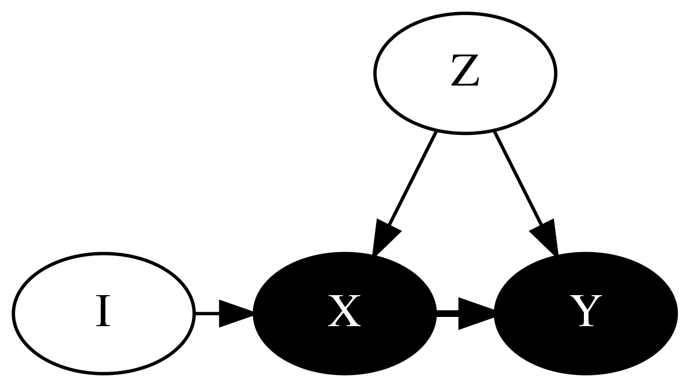

6 2SLS & Instrumental Variables

6.0.1 Preparation
# Setup
rm(list = ls(all = TRUE)) # Removes objects from the previous session
## Packages
library(haven) ## Package to read Stata data
library(ivreg) ## Package to run 2sls
library(fixest) ## This package can also run 2SLS
library(tidyverse) ## For tidyverse commands
library(memisc) ## For table outputting
## Loading Data
hajj_public <- read_dta("Data/hajj_public.dta")Do important life experiences influence political and social views? In particular, does performing the Hajj pilgrimage to Mecca affect the views of pilgrims? David Clingingsmith, Asim Ijaz Khwaja, and Michael Kremer (2009) analyze this question by using two-stage least squares to compare successful and unsuccessful applicants in a lottery used by Pakistan to allocate Hajj visas.
We will conduct pared-down models. The paper creates indices and implements additional statistical procedures to produce a broader and clearer picture. It is not a bad idea to read this paper to see how we can extend the methods we learn in class to your own work. I posted the paper on Canvas for your convenience.
Data description
| Variable | Description |
|---|---|
| hajj2006 | Went on Hajj trip in 2006 |
| success | Won the lottery to have expenses covered for Hajj |
| ptygrp | Categorical variable indicating size of party for Hajj trip |
| smallpty | 1 if small party group, 0 otherwise |
| urban | 1 if live in urban area, 0 otherwise |
| age | Age |
| female | 1 if female, 0 otherwise |
| literate | 1 if literate, 0 otherwise |
| x_s7q10 | Natl affairs: How often do you follow national affairs in the news on television or on the radio? Binary: 0=Twice a week or less, 1=Several times a week or more |
| x_s14aq10 | Religious: Do others regard you as religious? Binary: 1=Religious, 0=Not Religious |
| x_s10bq4 | OssamaIncorrect: Do you believe goals Ossama is fighting for are correct? Binary: 1=Not Correct at All/Slightly Incorrect, 0=Correct/Absolutely Correct |
| x_s7q12a | GovtForce: Govt should force people to conform to Islamic injunctions. Binary: 1=Agree Strongly/Agree, 0=Neutral/Disagree/Strongly Disagree |
| x_s7q1 | NatlInterest How interested would you say you are in national affairs? Binary: 0=Not interested, 1=Interested |
| x_s3q3 | Happy: how happy are you? From 1 (not at all happy) to 4 (very happy). |
| x_s10eq2 | GirlsSchool: In your opinion, girls should attend school. Binary: 0=Disagree, 1=Agree |
| s10dq1 | JobsWomen: When jobs are scarce, men should always have more right to a job than women. Binary: 0=Generally agree, 1=Generally Disagree |
More details on these and other variables are available in Appendix 3 of the paper. If you cannot access the version, the SSRN version works as well.
6.0.2 (a) Estimate a basic OLS model with “Do others regard you as religious” as the dependent variable as a function of Hajj2006. Explain how there might be endogeneity.
hajj_public %>%
lm(x_s14aq10~hajj2006, data=.) %>%
broom::tidy()## # A tibble: 2 × 5
## term estimate std.error statistic p.value
## <chr> <dbl> <dbl> <dbl> <dbl>
## 1 (Intercept) 0.767 0.0154 49.8 5 e-323
## 2 hajj2006 0.0851 0.0199 4.27 2.09e- 5There may be endogeneity due to baseline bias caused by the religiosity of respondents. A more religious respondent may be more likely to go on a Hajj trip and be classified as religious by others. Going to church, like actually being religious, is also a factor that may be correlated with x and lurking in the error term.
6.0.3 (b) State the requirements of a good instrument and xplain how the “success” variable may satisfy these conditions for a good instrumental variable.
The two conditions, inclusion and exclusion, are: \[Cov(X,Z)\ne0\] & \[Cov(Z,\epsilon)=0\]
The lottery is randomizes, which means it is not correlated with the error term, or anything else other than the treatment variable, in our model. Further, it meaningfully effects our key independent which is tested below.
6.0.4 (c) Use two different packages to estimate a 2SLS model of Religious as a function of Hajj2006. You can use library(AER), library(ivreg), library(fixest) or any other package for estimating 2SLS models.
## With library(ivreg)
hajj_public %>%
ivreg(x_s14aq10~hajj2006 | success, data=.) %>%
broom::tidy()## # A tibble: 2 × 5
## term estimate std.error statistic p.value
## <chr> <dbl> <dbl> <dbl> <dbl>
## 1 (Intercept) 0.757 0.0169 44.9 1.09e-281
## 2 hajj2006 0.101 0.0231 4.40 1.18e- 5## With library(fixest)
hajj_public %>%
feols(x_s14aq10 ~ 1 | hajj2006~success, data=., vcov = "iid") %>%
broom::tidy()## NOTE: 64 observations removed because of NA values (LHS: 64).## # A tibble: 2 × 5
## term estimate std.error statistic p.value
## <chr> <dbl> <dbl> <dbl> <dbl>
## 1 (Intercept) 0.757 0.0169 44.9 1.09e-281
## 2 fit_hajj2006 0.101 0.0231 4.40 1.18e- 5## Table Output
hajj_public %>%
feols(x_s14aq10~ 1 | hajj2006~success, data=., vcov = "iid") %>%
etable(title = "2SLS Pakistani Pilgrims Model", stage = 1:2)## NOTE: 64 observations removed because of NA values (LHS: 64). ..1 ..2IV stages First Second Dependent Var.: hajj2006 x_s14aq10
Constant 0.1421*** (0.0092) 0.7572*** (0.0169)
success 0.8506*** (0.0126)
hajj2006 0.1014*** (0.0231)
_______________ __________________ __________________
S.E. type IID IID
Observations 1,541 1,541
R2 0.74803 0.01127
Adj. R2 0.74787 0.01063
—
Signif. codes: 0 ‘’ 0.001 ’’ 0.01 ’’ 0.05 ‘.’ 0.1 ’ ’ 1
6.0.5 (d) Show the first stage from the 2SLS model above with lm(). Explain the implications of the results.
hajj_public %>%
lm(hajj2006~success, data=.) %>%
broom::tidy()## # A tibble: 2 × 5
## term estimate std.error statistic p.value
## <chr> <dbl> <dbl> <dbl> <dbl>
## 1 (Intercept) 0.137 0.00893 15.4 6.35e-50
## 2 success 0.854 0.0122 69.9 0The t-score is 69.8663143 which is much higher than the 3 threshold. Our instrument meets in the inclusion condition.
6.0.6 (e) Add covariates for age, literacy, urban, group size and gender to the 2SLS model Religious as a function of Hajj2006. What is different? Which variables are included in the first stage?
hajj_public %>%
feols(x_s14aq10~age + literate + ptygrp + female + urban |
hajj2006 ~ success + age + literate + ptygrp + female + urban,
data=., vcov = "iid") %>%
broom::tidy()## NOTE: 64 observations removed because of NA values (LHS: 64).## The instruments 'age', 'literate' and 3 others have been removed because of collinearity (see $collin.var).## # A tibble: 7 × 5
## term estimate std.error statistic p.value
## <chr> <dbl> <dbl> <dbl> <dbl>
## 1 (Intercept) 0.493 0.0623 7.92 4.41e-15
## 2 fit_hajj2006 0.101 0.0227 4.46 8.71e- 6
## 3 age 0.00269 0.000800 3.36 7.97e- 4
## 4 literate 0.0146 0.0238 0.616 5.38e- 1
## 5 ptygrp -0.000955 0.00642 -0.149 8.82e- 1
## 6 female 0.132 0.0217 6.06 1.69e- 9
## 7 urban 0.0674 0.0213 3.17 1.56e- 3hajj_public %>%
ivreg(x_s14aq10~hajj2006 + age + literate + ptygrp + female + urban |
success + age + literate + ptygrp + female + urban, data=.) %>%
summary(diagnostics=TRUE)##
## Call:
## ivreg(formula = x_s14aq10 ~ hajj2006 + age + literate + ptygrp +
## female + urban | success + age + literate + ptygrp + female +
## urban, data = .)
##
## Residuals:
## Min 1Q Median 3Q Max
## -0.9971 0.0486 0.1494 0.2186 0.4310
##
## Coefficients:
## Estimate Std. Error t value Pr(>|t|)
## (Intercept) 0.4934864 0.0622823 7.923 4.41e-15 ***
## hajj2006 0.1012173 0.0226841 4.462 8.71e-06 ***
## age 0.0026874 0.0007997 3.361 0.000797 ***
## literate 0.0146344 0.0237657 0.616 0.538131
## ptygrp -0.0009545 0.0064199 -0.149 0.881821
## female 0.1316934 0.0217261 6.062 1.69e-09 ***
## urban 0.0673979 0.0212624 3.170 0.001556 **
##
## Diagnostic tests:
## df1 df2 statistic p-value
## Weak instruments 1 1534 4594.635 <2e-16 ***
## Wu-Hausman 1 1533 1.787 0.182
## Sargan 0 NA NA NA
## ---
## Signif. codes: 0 '***' 0.001 '**' 0.01 '*' 0.05 '.' 0.1 ' ' 1
##
## Residual standard error: 0.3776 on 1534 degrees of freedom
## Multiple R-Squared: 0.04825, Adjusted R-squared: 0.04453
## Wald test: 13.18 on 6 and 1534 DF, p-value: 1.349e-146.0.7 (f) Run multiple 2SLS models with OssamaIncorrect, GovtForce, NatlInterest, Happy, GirlsSchool and JobsWomen variables as dependent variables. Use the list of covariates from earlier. If you want, try using a loop (but not necessary).
## OssamaIncorrect
hajj_public %>%
ivreg(x_s10bq4~hajj2006 + age + literate + ptygrp + female + urban | success +
age + literate + ptygrp + female + urban, data=.) %>%
broom::tidy()
## GovtForce
hajj_public %>%
ivreg(x_s7q12a~hajj2006 + age + literate + ptygrp + female + urban | success +
age + literate + ptygrp + female + urban, data=.) %>%
broom::tidy()
## NatlInterest
hajj_public %>%
ivreg(x_s7q1~hajj2006 + age + literate + ptygrp + female + urban | success +
age + literate + ptygrp + female + urban, data=.) %>%
broom::tidy()
## Happy
hajj_public %>%
ivreg(x_s3q3~hajj2006 + age + literate + ptygrp + female + urban | success +
age + literate + ptygrp + female + urban, data=.) %>%
broom::tidy()
## Girl School
hajj_public %>%
ivreg(x_s10eq2~hajj2006 + age + literate + ptygrp + female + urban | success +
age + literate + ptygrp + female, data=.) %>%
broom::tidy()
## Jobs Women
hajj_public %>%
ivreg(x_s10dq1~hajj2006 + age + literate + ptygrp + female + urban | success +
age + literate + ptygrp + female, data=.) %>%
broom::tidy()## Loop
## DVs
dvs <- c("hajj_public$x_s10bq4", "hajj_public$x_s7q12a", "hajj_public$x_s7q1",
"hajj_public$x_s3q3", "hajj_public$x_s10eq2", "hajj_public$x_s10dq1")
## Loop
for(i in 1:length(dvs)){
model <- paste("model",i, sep="")
m <- ivreg(as.formula(paste(dvs[i],"~hajj2006 + age + literate + ptygrp +
female + urban | success + age + literate + ptygrp + female + urban")), data=hajj_public)
assign(model,m)}